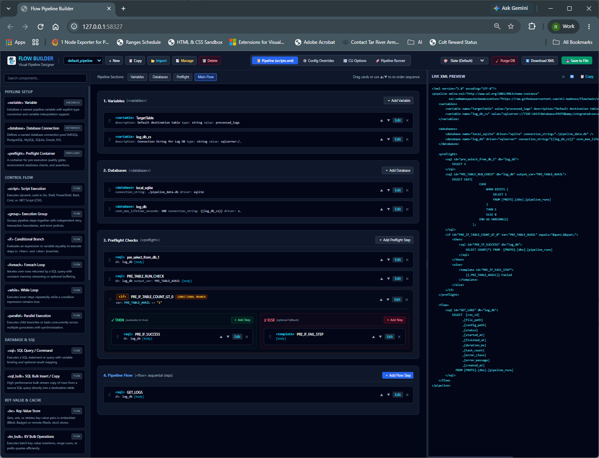
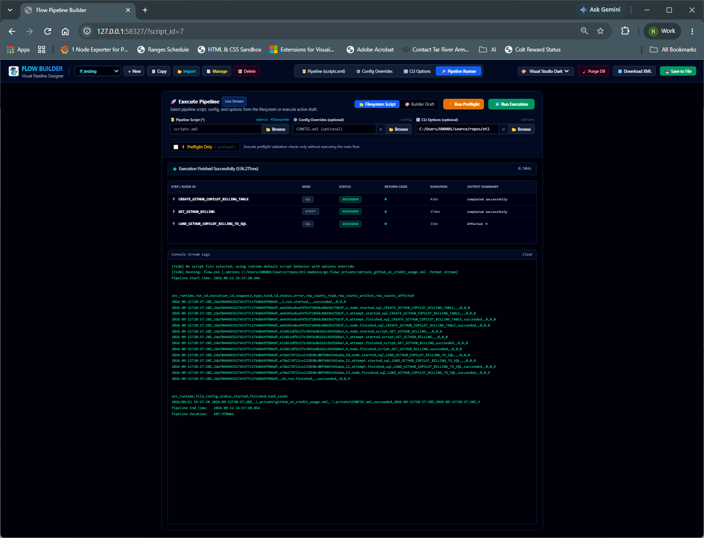
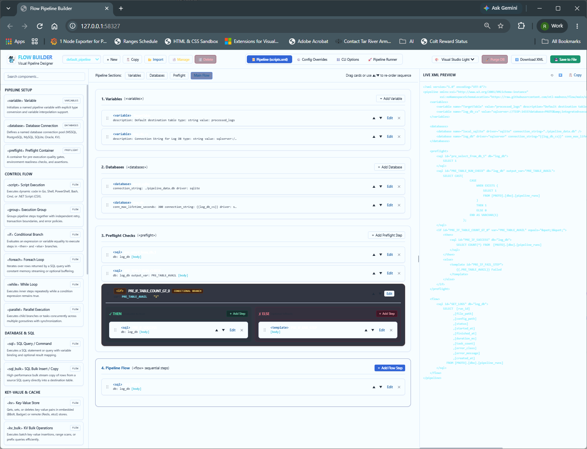
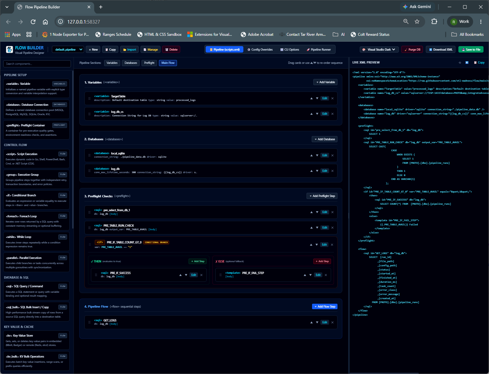

Flow (go-flow) Documentation Hub
Single-binary, zero-dependency enterprise ETL & workflow orchestration engine written in Go.
Combines Git-friendly declarative XML pipelines with an embedded HTMX visual studio (-builder),
O(1)-memory bulk streaming replication, in-process Go scripting (Yaegi), AES-256-GCM encryption, and multi-standard digital signatures.
flow.exe / flow)
Visual Studio: flow -builder (15 Built-in Themes)
Databases: SQL Server, Postgres, MySQL, Oracle, SQLite, Redis, etcd, Badger, bbolt
Security: AES-256-GCM + X.509 / PKCS#7 / OpenPGP
Markdown Index: index.md
1. Executive Overview & Why Flow?
| Capability | Traditional Python / Cluster (Airflow, Prefect) | Legacy Enterprise GUI (SSIS, Informatica) | Flow (go-flow) |
|---|---|---|---|
| Deployment Footprint | Multi-container cluster, Redis/Celery, Python venvs | Heavy Windows server licenses & proprietary agents | Single static binary (~30 MB), zero runtime dependencies |
| Authoring Experience | Imperative Python code only | Desktop-only drag-and-drop | Bidirectional: Embedded Web UI (-builder) + Git-friendly XML |
| High-Volume Bulk ETL | Memory-heavy DataFrames (pandas) |
Fast, but locked to specific vendor ecosystems | O(1) constant-memory streaming (<sql_bulk>, <kv_bulk>) |
| In-Process Scripting | Native Python (dependency conflicts common) | C# / VB (requires compilation/GAC) | Embedded Go (Yaegi) + PowerShell, Bash, Cmd, Zsh, CSX |
| Cryptographic Security | External vaults / custom plugins | OS-bound DPAPI encryption | Cross-platform AES-256-GCM + OpenSSL/PKCS#7/OpenPGP signatures |
| Audit & Observability | Requires external Postgres + log forwarders | Proprietary logging tables | Plug-and-play log_db sink, JSONL, & real-time stream events |
2. Architecture & Deterministic Execution Lifecycle
Uniform Resource Loader
Loads pipelines, options, and configs from local files (UTF-8/UTF-16), HTTP/HTTPS endpoints, or sql:// / db:// database queries.
Cryptographic Gate
Verifies detached or inline envelopes (X.509, PKCS#7 .p7s, OpenPGP .asc, FLOWSIGNED:v1) and decrypts AES-256-GCM (FLOWENC:v1).
Hierarchy & AST Validation
Merges --file < --options < --config < --vars and validates against pipeline.xsd & semantic AST rules.
Preflight & Main Flow
Executes <preflight> readiness gates followed by <flow> steps (transactions, parallel pools, bulk streams, scripts).
Observability & Audit
Streams structured output (csv, json, markdown, stream), writes to log_db tables, or renders XSLT 3.0 + Mermaid docs.
3. Complete Documentation Directory (51 Guides & References)
3.1 Executive Summaries & Visual Tour
Business & Executive Summary
Architectural value proposition, TCO reduction, security posture, and enterprise comparison matrix.
Automation & ETL Architecture Summary
Condensed technical overview of CLI flags, AST primitives, SQL dialect parameter binding, and telemetry schemas.
Visual Builder Slideshow (Markdown)
Step-by-step visual walkthrough of the 3-panel HTMX studio, modals, themes, and runner dashboard.
Interactive Builder Slideshow (HTML)
Standalone interactive browser presentation showcasing the Flow Builder UI with keyboard navigation.
3.2 CLI, Configuration Hierarchy & Remote Sources
Complete CLI Reference
Exhaustive flag reference, secret precedence rules, exit codes, and enterprise recipes across flow, crypto_tool, and db_importer.
Summary of Available Pipeline XML Options
Complete XML element and attribute specification for <pipeline>, <databases>, <variables>, <preflight>, and <flow>.
Configuration & Execution Hierarchy
How Flow merges --file, --options, --config, and --vars across Dev, Staging, and Production environments.
Variables Container (<variables>)
Declaring typed variable collections (string, int, float, bool, date, datetime) and recursive {{var}} expansion.
Variable Element (<variable>)
Detailed reference for individual <variable> definitions, type parsing, and runtime overrides.
Remote File, HTTP & SQL DSN Sources
Loading pipelines, options, and configs from local paths, HTTP/HTTPS (with Basic Auth), and sql:// or db:// queries.
Database-Backed XML Storage
Storing and executing PipelineXML, OptionsXML, and ConfigXML inside SQL Server via db_importer.
UTF-8 & UTF-16 Encoding Guide
Automatic BOM detection and transcoding for Windows PowerShell UTF-16LE files and SQL Server NVARCHAR(MAX) columns.
Using Pipeline & Node Descriptions
Best practices for self-documenting pipelines using description attributes rendered in logs and Mermaid flowcharts.
3.3 Security: Encryption & Digital Signatures
Security Order of Operations & Options
Deep dive into Encrypt-then-Sign vs. Sign-then-Encrypt vs. Detached Signatures, key precedence, and security flags.
Single-File Cryptography (.sec / -wrap)
End-to-end Windows (PowerShell/Cert Store) and Linux/macOS (OpenSSL/Bash) walkthroughs for unified .sec packages.
Cross-Platform Encryption Guide (FLOWENC:v1:)
AES-256-GCM architecture, PBKDF2-HMAC-SHA256 key derivation, memory zeroization, and at-rest database encryption.
Cross-Platform Digital Signatures (FLOWSIG:v1:)
Pure-Go verification and signing with OpenSSL (RSA/ECDSA/Ed25519), PKCS#7/CMS (.p7s), and OpenPGP/GPG (.asc).
3.4 Databases, Bulk ETL, Key-Value & Transactions
Database Connections & Pooling (<database>)
Configuring relational and KV drivers, connection pool tuning (max_open_conns, workload), and dialect rules.
Database Connection Strings Reference
Copy-paste connection string templates for SQL Server (including Azure Entra ID fedauth), Postgres, MySQL, Oracle, SQLite, and KV stores.
SQL Execution (<sql>)
Executing DDL, DML, and SELECT queries with intelligent statement classification, parameter binding, and output_var.
High-Speed Bulk ETL (<sql_bulk>)
O(1) constant-memory cross-database streaming replication, native SQL Server TDS CopyIn (tablock), and batch tuning.
Comparing <sql> and <sql_bulk>
Architectural comparison and decision guide for choosing between standard <sql> execution and <sql_bulk> streaming.
Database Transactions & Savepoints
Atomic <group transaction="true"> blocks, dialect-aware nested savepoints, parallel transaction isolation, and bulk copy caveats.
Key-Value Store Operations (<kv> & <kv_bulk>)
Unified NoSQL interface for bbolt, BadgerDB, Redis/Valkey, and etcd, plus SQL-to-KV bulk streaming (<kv_bulk>).
DB Select, Template & Stdio Pattern
End-to-end guide for querying relational data, formatting rows via <template>, and streaming to standard output.
3.5 Control Flow, Loops, Concurrency & Quality Gates
Preflight Validation Gates (<preflight>)
Pre-execution environment checks, connectivity verification, and schema readiness assertions before <flow> begins.
Sequential & Transactional Grouping (<group>)
Organizing steps into logical units with optional conditional execution (if_var/if_equals) and atomic transactions.
Conditional Branching (<if>, <then>, <else>)
Dynamic branching using variable equality (var/equals) or expression evaluation (condition).
Dataset Iteration (<foreach> / <loop>)
Row-by-row SQL cursor iteration in O(1) streaming mode (stream="true") or buffered mode with automatic column binding.
Conditional Loops (<while>)
State-driven polling and pagination loops with WHILE_INDEX tracking and max_iterations safety guards.
Concurrent Worker Pools (<parallel>)
Multi-threaded execution (max_threads) with isolated variable cloning, cooperative cancellation, and collision namespacing.
Declarative Assertions (<assert>)
Data quality gates with halt vs. warn policies, failure flag variables (fail_var), and nested <on_failure> recovery blocks.
3.6 Scripting, Templates, HTTP & Data Formats
Polyglot Scripting (<script>)
In-process pure-Go Yaegi interpreter (host/vars, host/db) plus external shells (pwsh, powershell, bash, sh, cmd, zsh, csx).
Text Templates (<template>)
Dynamic SQL, JSON, and report generation using Go's text/template engine and helper functions.
HTML Templates (<template_html>)
Context-aware XSS-safe HTML email and dashboard rendering using Go's html/template engine.
Comparing <template> and <template_html>
Side-by-side comparison of raw text interpolation vs. automatic HTML contextual escaping.
HTTP / REST Client (<http_client>)
Full-featured REST integration with custom headers, TLS/mTLS tuning, proxies, cookie jars, redirects, and status capture.
JSONPath Extraction (<json_path>)
Extracting scalars, objects, and arrays from API responses or files using JSONPath expressions.
JSONPath Syntax & Examples Guide
Comprehensive tutorial on JSONPath operators, recursive descent, array slicing, and filter expressions in Flow.
XPath Extraction (<xml_xpath>)
Querying XML documents and SOAP payloads with XPath expressions in text, xml, or json_array output modes.
YAML Path Extraction (<yaml_path>)
Extracting configuration values and structured nodes from YAML files or variables.
Excel Workbook Reader (<excel_read>)
Reading .xlsx worksheets into structured JSON arrays for downstream iteration and transformation.
Excel Workbook Writer (<excel_write>)
Exporting SQL query results directly into multi-tab .xlsx spreadsheets with automatic header generation.
File Reader (<file_read>)
Loading local text, JSON, XML, or SQL files into pipeline variables.
File Writer (<file_save>)
Writing or appending pipeline variables and inline templates to disk with automatic directory creation.
3.7 Observability, Telemetry, Failure Handling & Debugging
Database Logging Configuration (log_db)
DDL schemas for PostgreSQL, SQL Server, MySQL, Oracle, and SQLite (pipeline_runs & pipeline_events) and -node-output.
Failure Response & Error Propagation
Fail-fast semantics, cooperative <parallel> cancellation, cursor cleanup, transaction rollbacks, and <assert> recovery paths.
Comprehensive Pipeline Debugging Guide
5 production debugging patterns (variable dumps, interactive prompts, loop tracing, state mutation, and post-mortems) in Go and CSX.
Observability & Event Sinks Usage Guide
Programmatic guide to ExecuteRun, JSONLineSink, multi-sink fanout (SetEventSinks), and OpenTelemetry bridges.
3.8 Developer & Extension Guides
Executing Flow Pipelines (Execute vs ExecuteRun)
Go SDK guide comparing flat []ScriptResult execution with structured RunResult observability trees.
Builder Modal Tooltips & Documentation Popups
Developer guide for adding interactive markdown documentation modals and ⚡ Use Example autofill buttons to the Builder UI.
Builder Theme Customization Guide
Architecture of the 15 built-in UI themes (slate, vscode-dark-plus, visual-studio-light, etc.) and adding new themes.
4. Visual Pipeline Builder Studio (flow -builder)
Launch Interactive Tour →
Launching ./flow -builder -builder-port 8080 starts an embedded HTMX web studio backed by a local SQLite project store (flow_builder.db).




localStorage.5. Quick Start & Sample Pipeline
# 1. Validate XML Schema and Semantic AST without executing
./flow -file pipeline.xml -xsd ./xsd/pipeline.xsd -validate
# 2. Run Preflight Checks only
./flow -file pipeline.xml -preflight
# 3. Execute Pipeline with Runtime Variable Overrides and Live Stream Output
./flow -file pipeline.xml -vars "MinSpend=10000.00" -format stream6. Complete AST Component Matrix
| Category | XML Element | Primary Purpose | Detailed Guide |
|---|---|---|---|
| Setup & Config | <variables> / <variable> | Typed variable definitions (string, int, float, bool, date, datetime) | variables.md / variable.md |
| Setup & Config | <databases> / <database> | Relational & Key-Value connection pools with dynamic {{var}} DSNs | database.md |
| Quality Gate | <preflight> | Pre-execution validation and environment readiness checks | preflight.md |
| Control Flow | <group> | Sequential container with optional conditional check and atomic transaction="true" | group.md |
| Control Flow | <if> / <then> / <else> | Dynamic conditional branching on variables or expressions | if_then_else.md |
| Control Flow | <foreach> / <loop> | SQL dataset cursor iteration (O(1) streaming or buffered) | foreach.md |
| Control Flow | <while> | Conditional polling / pagination loop with max_iterations guard | while.md |
| Control Flow | <parallel> | Concurrent worker pool (max_threads) with thread-isolated variables | parallel.md |
| Quality Gate | <assert> | State invariant check (halt or warn) with <on_failure> fallback block | assert.md |
| Database & KV | <sql> | Single or multi-statement SQL query/DML execution | sql.md |
| Database & KV | <sql_bulk> | High-speed O(1) cross-database streaming bulk copy | sql_bulk.md |
| Database & KV | <kv> / <kv_bulk> | NoSQL Key-Value operations & SQL-to-KV bulk streaming (bbolt, badger, redis, etcd) | kv.md |
| Code & Templates | <script> | Embedded Go (Yaegi) & shell scripts (pwsh, bash, cmd, zsh, csx) | script.md |
| Code & Templates | <template> | Go text/template dynamic text/SQL/JSON rendering | template.md |
| Code & Templates | <template_html> | Go html/template XSS-safe HTML rendering | template_html.md |
| Web & Extraction | <http_client> | REST/HTTP client with TLS, proxy, timeout, and header controls | http_client.md |
| Web & Extraction | <json_path> | JSONPath query extraction (value, json, json_array) | json_path.md |
| Web & Extraction | <xml_xpath> | XPath query extraction (text, xml, json_array) | xml_path.md |
| Web & Extraction | <yaml_path> | YAML path query extraction (value, json, json_array, yaml) | yaml_path.md |
| Files & Excel | <excel_read> | .xlsx worksheet reader to JSON array | excel_read.md |
| Files & Excel | <excel_write> | SQL query exporter to multi-sheet .xlsx workbooks | excel_write.md |
| Files & Excel | <file_read> | Local file reader into pipeline variable | file_read.md |
| Files & Excel | <file_save> | Local file writer / appender from variable or inline content | file_save.md |
7. Ecosystem CLI Reference (flow, crypto_tool, db_importer)
For the complete flag reference and recipes, see Complete CLI Options and Arguments.
| Flag | Default | Description |
|---|---|---|
-file <path|uri> | scripts.xml | Pipeline XML path, HTTP(S) URL, or sql:// / db:// database query URI. |
-options <path|uri> | "" | XML options profile defining default CLI flags (<flow_cli_options>). |
-config <path|uri> | "" | Environment override XML (CONFIG.xml) for variables and databases. |
-vars "K=V,..." | "" | Runtime variable overrides (highest precedence; recursive expansion up to 3 levels). |
-format <fmt> | csv | Output renderer: csv, text, json, jsonpretty, markdown, or stream. |
-validate | false | Validates XML schema (-xsd) and AST semantics without executing nodes. |
-preflight | false | Executes <preflight> nodes only and exits. |
-builder | false | Launches the interactive HTMX visual pipeline studio web server. |
-builder-port <int> | 0 | Port for the visual builder web server (0 selects an ephemeral port). |
-encrypted | false | Decrypts AES-256-GCM input resources (auto-detected for FLOWENC:v1: payloads). |
-key-file <path> | "" | Path to symmetric key/passphrase file (recommended over -secure-key). |
-verify-signature | false | Enforces digital signature verification before decryption or execution. |
-public-key / -cert | "" | Public key (.pem) or X.509 certificate (.pem/.cer) for signature verification. |
-node-output | false | Persists redacted node outputs into pipeline_events.node_output when log_db is active. |
-xslt <path> / -out | "" | Transforms pipeline XML via XSLT 3.0 with an injected Mermaid.js diagram. |
-debug | false | Enables verbose diagnostic logging. |